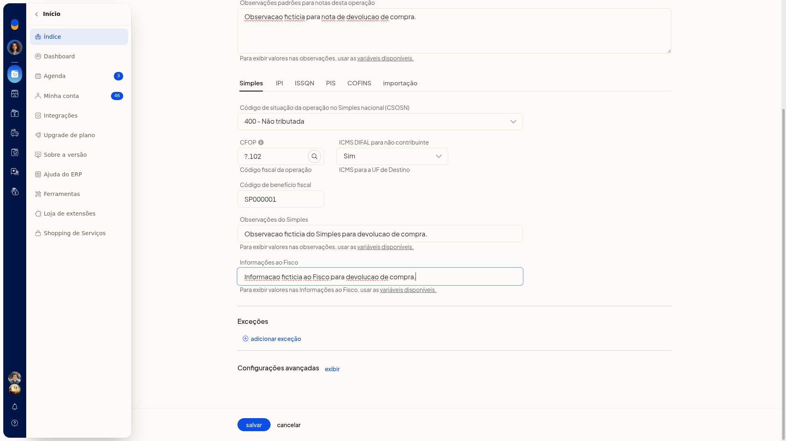
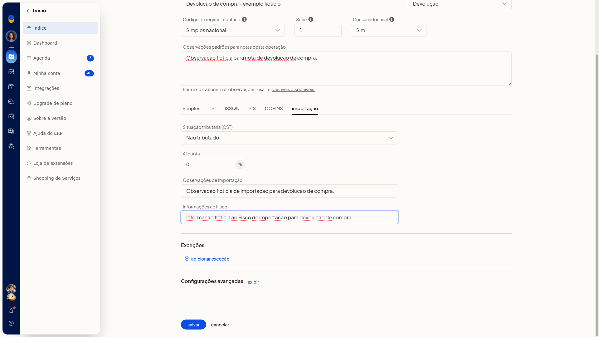
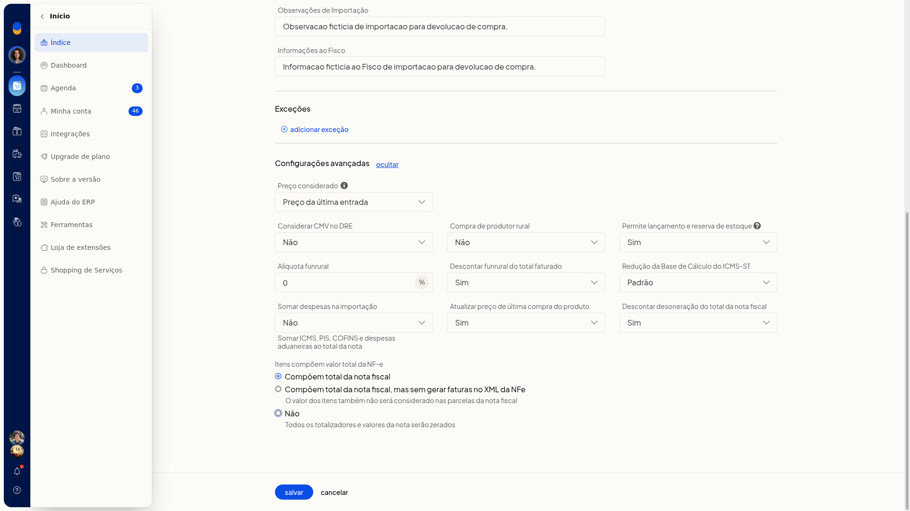

Notas de devolução (venda e compra)
No ERP da Olist, a devolução usa a finalidade Devolução. Na devolução de venda, você marca essa finalidade na natureza de operação de saída e escolhe a mesma opção ao incluir a nota fiscal. Na devolução de compra, a finalidade fica na natureza de operação de entrada.
Pré-requisitos
- Para a devolução de venda, use uma natureza de operação de saída.
- Para a devolução de compra, use uma natureza de operação de entrada.
Importante
- Na nota, a Finalidade inclui 4 Devolução. As outras opções vistas são 1 normal, 2 NF-e complementar, 3 ajuste, 6 débito, 7 cupom, 9 chave e 10 pagamento antecipado.
- Bonificação, Remessa e Retorno não aparecem na Finalidade da nota.
- Na natureza de saída e na de entrada, a Finalidade lista Normal, Devolução, Bonificação e Remessa. Retorno não aparece nessa lista.
Instruções
Configurar a natureza de saída
- Acesse Configurações > Configurações ERP > Notas Fiscais > Naturezas de operação de saída (tributação).
- Abra a inclusão ou a edição de uma natureza de operação de saída.
- No campo Finalidade, selecione Devolução. A finalidade Devolução fica selecionada na natureza de saída.
Incluir a nota de devolução de venda
- Acesse Vendas > Notas Fiscais.
- Clique em incluir nota fiscal.
- No campo Finalidade, selecione 4 Devolução. Use a natureza de saída com Finalidade Devolução, em Configurações > Configurações ERP > Notas Fiscais > Naturezas de operação de saída (tributação). A inclusão da nota oferece a finalidade Devolução.
Configurar a natureza de entrada
-
Acesse Configurações > Configurações ERP > Notas Fiscais > Naturezas de operação de entrada.
-
Abra incluir natureza.
-
No campo Finalidade, selecione Devolução.
-
Preencha o restante da natureza.

-
Abra a aba Importação. Nela aparecem CST Não tributado e alíquota 0.

-
Abra as opções avançadas. A tela mostra Preço (última entrada ou custo), CMV, Estoque, Funrural, Descontar funrural, redução da BC de ICMS-ST (Padrão ou Antes de somar o IPI), somar despesas de importação, Atualizar última compra, descontar desoneração e itens que compõem o total. A natureza de entrada de devolução fica preenchida na tela, com a aba de importação e as regras avançadas de preço, estoque e ICMS-ST.
